ComfySims와 이 작업의 출발점
본론에 앞서 발표자는 자기가 만든 오픈소스 ComfySims를 보여 줘요. ComfyUI 위에서 돌아가는 도구예요. 살고 싶은 집의 청사진을 넣으면 쓰고 있는 로컬이나 클라우드의 ComfyUI로 집부터 세우고 렌더링해요. 아마존이나 이케아에서 고른 가구 링크를 넣으면 실제 크기 그대로 3D로 만들어 집 안에 놓아요. 360도로 둘러보면서 사진이나 영상으로 뽑을 수도 있어요.
아래 화면에서 거실 한가운데 파란 소파가 링크로 들여온 가구예요. 왼쪽 위 카드에 제품 이름과 크기가 보이고, 오른쪽 목록에는 집에 놓을 수 있는 가구가 쌓여 있어요.
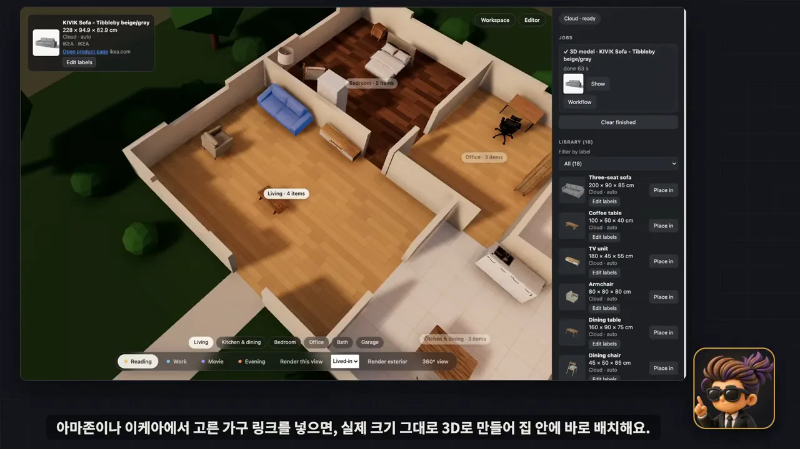
그럴듯했지만 자로 재 보니 틀렸어요
아래 거실 사진은 진짜 방이 아니에요. AI에게 가구 배치를 맡기고, 그 배치를 사진처럼 바꾼 거예요. 왼쪽 책장, 가운데 낮은 테이블, 오른쪽 소파와 창가의 나무 의자가 보여요. 처음엔 잘한 것 같았어요. 그런데 자로 재 보니 TV(Television)장 높이가 1cm 틀렸고, 창가 의자는 창 아래를 가리고 있었어요.
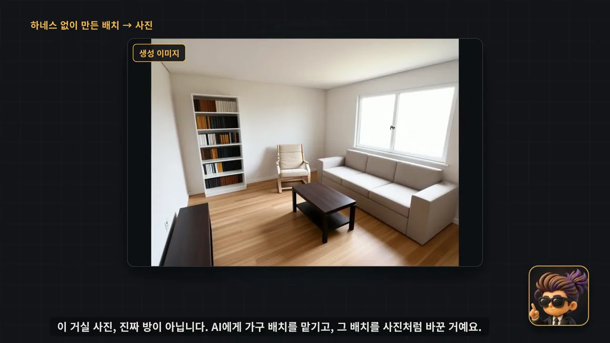
그래서 같은 일을 다시 맡기기 전에 하네스부터 설계했어요. 하네스는 원래 말에 채우는 마구예요. AI 코딩에서는 AI가 일하는 폴더에 넣어 두는 규칙, 자, 검사 도구 묶음을 말해요. 슬라이드 아래 칸에 적힌 대로, 모델은 그대로 두고 결과를 안정시키는 방법이에요.
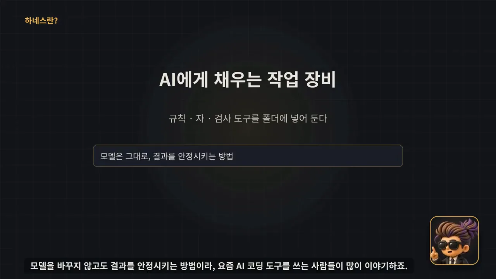
과제, 그리고 하네스 없이 한 번 맡기기
과제는 네 칸짜리 흐름이에요. 터미널에서 Claude Code에게 부탁하면, three.js로 실제 치수의 방과 가구 상자를 놓고, 그 장면에서 이미지 두 장(깊이·윤곽선)을 뽑아, ComfyUI에서 구도를 그대로 둔 채 사진처럼 그려요. 가구를 크기만 맞춘 상자에 가깝게 놓는 이 단계를 블로킹이라고 불러요.
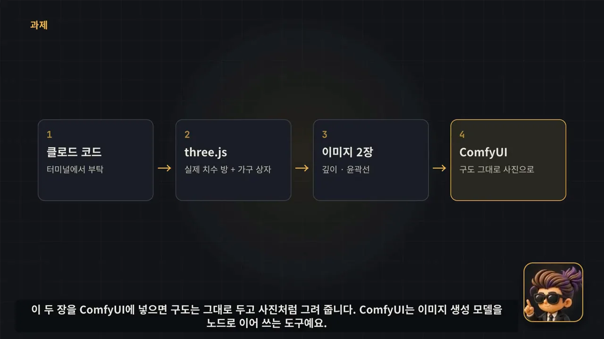
깊이 이미지는 가까울수록 밝게 칠한 그림이고, 윤곽선 이미지는 모서리만 그린 그림이에요. ComfyUI는 이미지 생성 모델을 노드로 이어 쓰는 도구예요.
방과 가구
방과 가구는 모두 실제 값이에요. 왼쪽 위 두 카드가 방 크기와 창·문 위치, 나머지 다섯 카드가 이케아에서 실제로 파는 가구의 가로×깊이×높이예요.
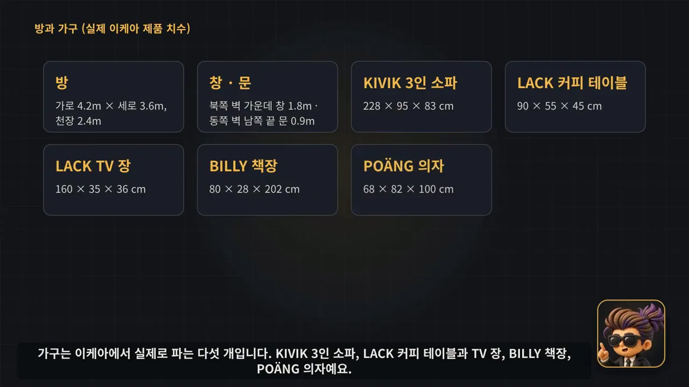
뒤에 나오는 CLAUDE.md 규칙(원점은 북서쪽 바닥 모서리, 동쪽이 +x, 남쪽이 +z)에 맞춰 이 방을 위에서 그리면 이래요. 창은 북쪽 벽 가운데 폭 1.8m, 창턱 높이 0.9m이고, 문은 동쪽 벽 남쪽 끝 폭 0.9m예요. 붉은 띠가 검사 스크립트가 지키는 '창 앞 30cm'예요.
하네스 없이 한 번
README 하나만 있는 빈 폴더에서 평소 말투로 부탁했어요. 방 치수, 창과 문 위치, 가구 이름, 그리고 문 쪽에서 본 깊이·윤곽선 이미지를 out 폴더에 저장해 달라는 내용이에요. Claude는 three.js와 크롬이 있는지 확인하고, 방과 가구를 그리는 코드와 이미지를 뽑는 코드를 차례로 썼어요. 뽑은 깊이 이미지를 직접 열어 보기도 했어요. 5분 46초 만에 끝났고, 가구마다 이케아 공식 치수를 썼다고 표로 정리해 줬어요.
결과는 왼쪽부터 색을 입힌 미리 보기, 깊이, 윤곽선이에요. 처음 보기엔 꽤 그럴듯해요.
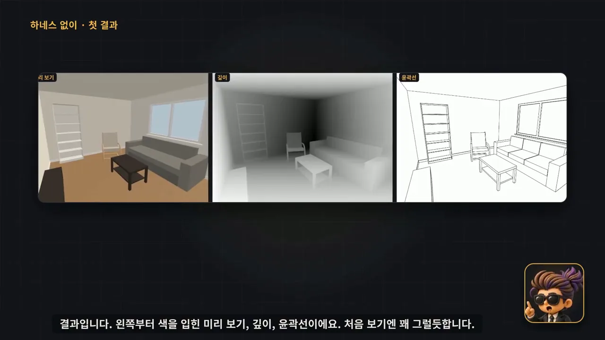
이어서 소파는 동쪽 벽, TV장은 서쪽 벽으로 옮겨 달라고 했어요. Claude는 TV장이 의자와 겹친다는 걸 알아채고 의자를 창가로 옮긴 뒤 이미지를 다시 뽑았어요. 3분 26초 걸렸어요.
자로 재 보니 실수 두 개
여기서부터 장면을 실제로 불러와 가구마다 차지하는 상자를 재고, 제품 치수·방 조건과 비교했어요. 표의 노란 두 줄이 실수예요. 첫 줄은 LACK TV장 높이가 35cm로 들어간 것(제품은 36cm)이에요. 1cm지만 치수를 기억에 맡겼다는 뜻이에요. 둘째 줄은 높이 1m인 POÄNG 의자가 창턱 0.9m인 창 바로 앞에 놓여 창 아래를 가린 거예요.
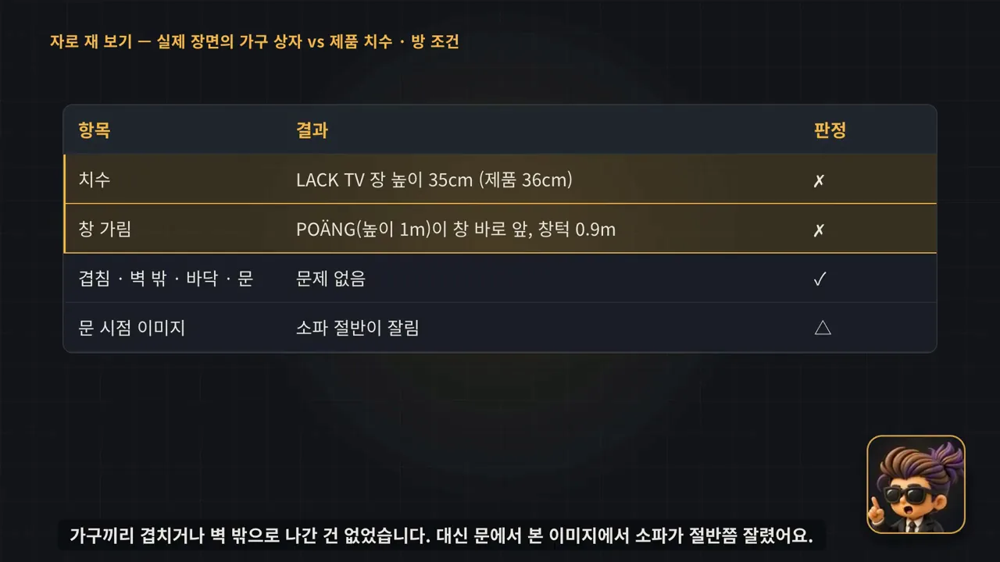
이 배치를 사진으로 바꾸면 문제가 눈에 보여요. 오른쪽 창 아래를 의자 등받이가 가리고, 소파는 화면 오른쪽 밖으로 잘려 나가요.
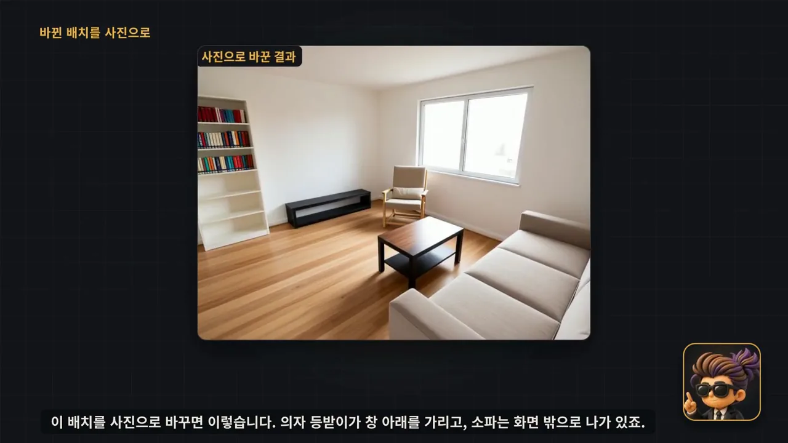
남의 하네스 보고, 질문 세 개로 정하기
발표자는 먼저 남들이 하네스를 어떻게 짰는지 봤어요. GitHub에서 별을 많이 받은 공개 저장소 네 곳이에요. 각 화면 오른쪽 위 배지에 저장소 이름과 별 수가 적혀 있어요.
저장소 네 곳이 막은 것
첫째는 Claude Code 공식 저장소(anthropics/claude-code, 별 15.2만)의 CLAUDE.md예요. Claude를 부르는 자동화 작업이 지켜야 할 보호 장치 세 가지를 적었는데, 노란 테두리 친 아래 문단이 핵심이에요. 규칙을 어기면 실패하는 검사를 따로 두고, 그 검사를 건너뛰거나 약하게 만들지 말라고 적었어요. 규칙과 검사를 짝으로 둔 거예요.
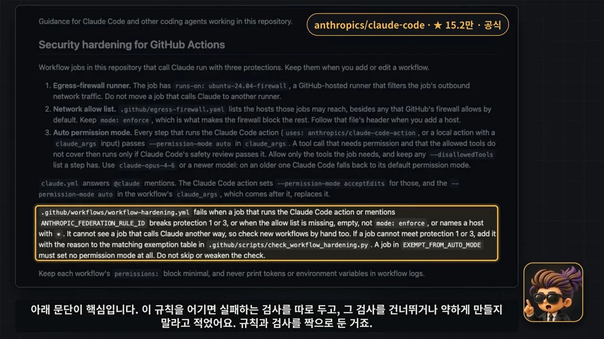
둘째, claude-code-best-practice(별 약 6.8만)는 settings.json의 ask 목록에 rm, chmod, npm 같은 명령을 넣었어요. 위험한 명령은 실행 전에 꼭 묻게 한 거예요. 화면 아래쪽 노란 칸이 그 목록이에요.
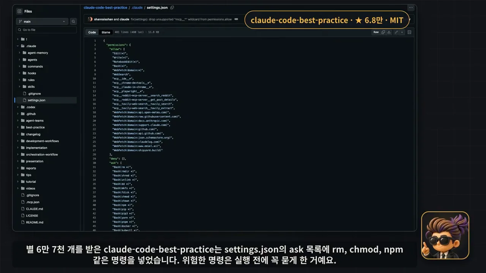
셋째, claude-mem(별 10.2만)은 읽지 말아야 할 것을 막았어요. 코드의 permissions.deny에 package-lock.json, node_modules, .DS_Store 읽기가 들어 있어요. 쓸모없는 내용이 컨텍스트를 채우지 않게 한 거예요.
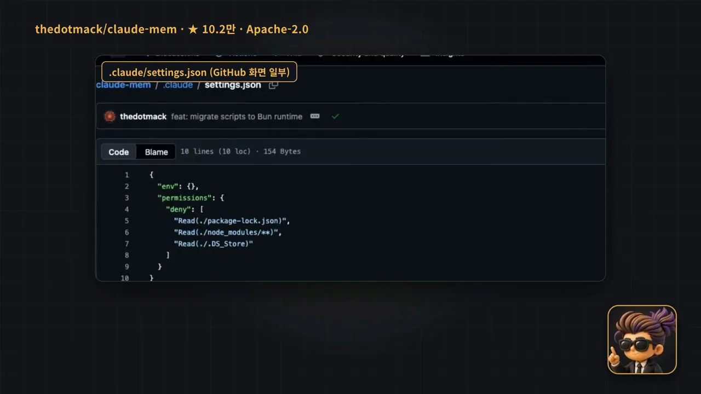
넷째, agent-skills(별 10.8만)는 폴더 구조를 적고, 아래 'Skills by Phase'처럼 스펙·계획·빌드·테스트·리뷰를 슬래시 명령으로 나눴어요. 일의 순서를 명령으로 고정한 거예요.
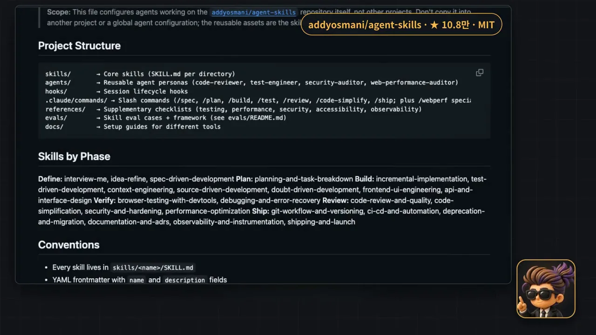
가져온 것과 뺀 것
발표자는 이 중 세 가지를 가져왔어요. 규칙과 검사를 짝으로 두는 방식은 CLAUDE.md·check.mjs·훅으로, 폴더 구조·파일 약속은 규칙 파일로, 일의 순서는 슬래시 명령 대신 스펙 파일과 완료 조건으로 옮겼어요. 위험 명령 묻기(ask)와 읽기 막기(deny), 단계별 슬래시 명령은 뺐어요. 이 일에는 지우는 명령도 큰 폴더도 없고, 틀리는 건 치수와 배치였거든요. 부탁도 한 번으로 끝나고요.
| 저장소 | 막은 것 | 이 하네스에서는 |
|---|---|---|
| anthropics/claude-code | 규칙 + 그 규칙의 검사를 짝으로 | 가져옴 → CLAUDE.md · check.mjs · 훅 |
| claude-code-best-practice | 위험 명령은 묻기(ask) | 뺌 — 지우는 작업이 없음 |
| claude-mem | 쓸모없는 파일 읽기 막기(deny) | 뺌 — 큰 폴더가 없음 |
| agent-skills | 단계별 슬래시 명령으로 순서 고정 | 순서만 가져옴 → 스펙 파일 + 완료 조건 |
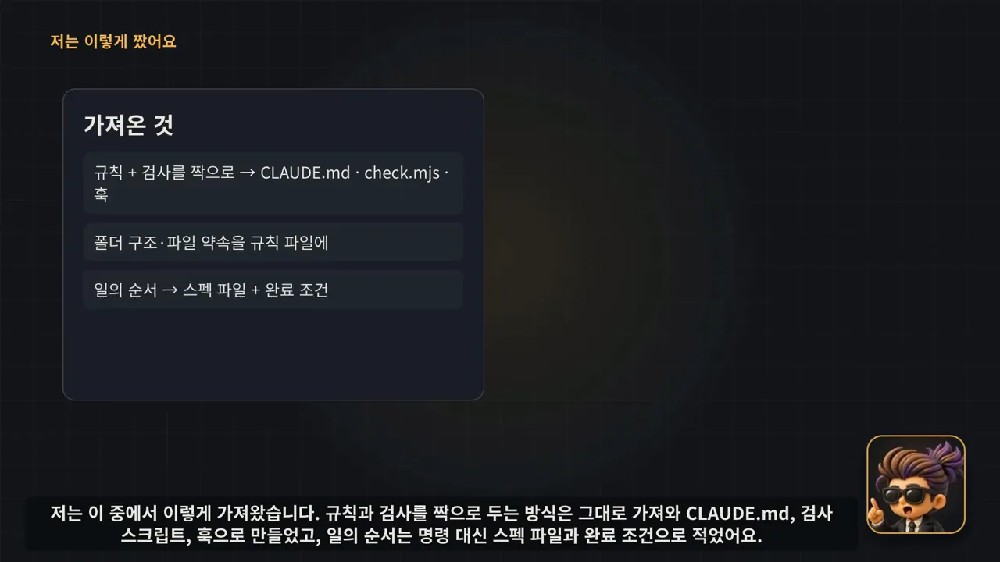
설계 전에 답하는 질문 세 개
그래서 질문은 다시 이 일로 돌아와요. 하네스를 만들기 전에 세 질문에 먼저 답해요. 슬라이드의 세 칸 아래 작은 글씨가 이 일에서의 답이에요.
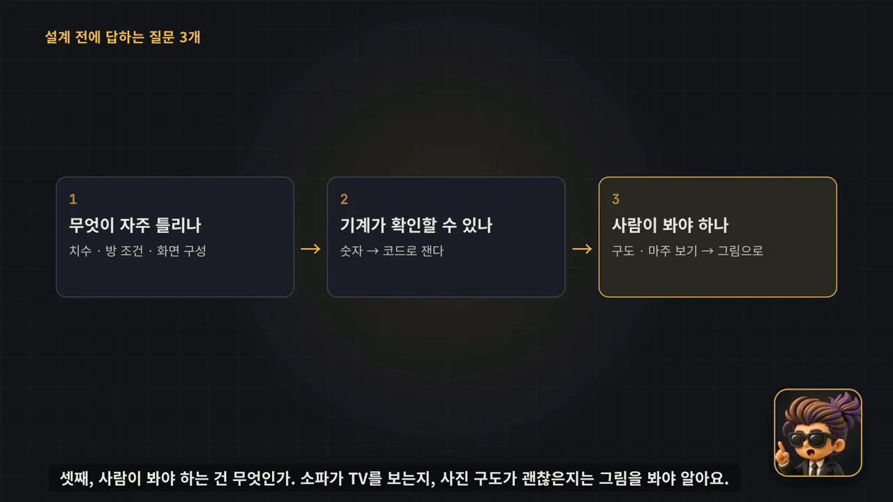
- 무엇이 자주 틀리나? 방금 본 것처럼 가구 치수, 창과 문 같은 방 조건, 화면 구성이에요.
- 그중 무엇을 기계가 확인할 수 있나? 치수·겹침·벽·바닥·문·창은 숫자라서 코드로 잴 수 있어요.
- 사람이 봐야 하는 건 무엇인가? 소파가 TV를 보는지, 사진 구도가 괜찮은지는 그림을 봐야 알아요.
답을 기법으로 옮기면 여섯 가지가 돼요. 카드마다 이름 아래에 무엇을 담는지가 짧게 적혀 있어요.
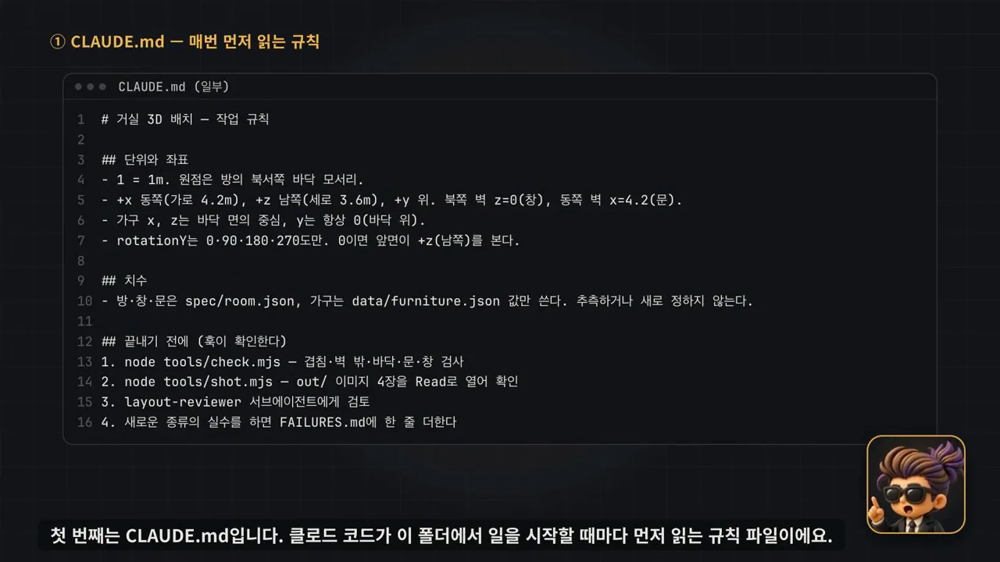
하네스 기법 여섯 가지
여섯 기법을 화면에 나온 파일 순서대로 봐요. 코드 화면마다 노란 테두리가 그 순간 발표자가 짚는 줄이에요.
① CLAUDE.md — 매번 먼저 읽는 규칙
CLAUDE.md는 Claude Code가 이 폴더에서 일을 시작할 때마다 먼저 읽는 규칙 파일이에요. '단위와 좌표' 절에서 단위는 미터, 원점은 방의 북서쪽 바닥 모서리, 동쪽이 +x, 남쪽이 +z라고 못 박았어요. 기준이 다르면 같은 숫자도 엉뚱한 자리가 되거든요. 노란 줄은 그 아래 약속이에요. 가구 위치는 바닥면 중심, 높이는 항상 0, 회전은 0·90·180·270도만 써요. 기계가 검사하기 쉬운 모양으로 미리 정한 거예요.
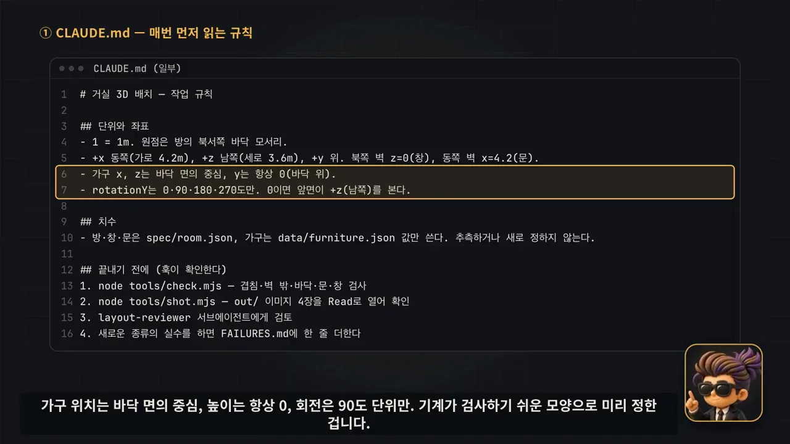
FAILURES.md 순서가 적혀 있어요. 이게 슬래시 명령 대신 쓴 완료 조건이에요. 영상 06:20에서 보기② 스펙과 치수 데이터
방·창·문은 spec/room.json에, 가구는 data/furniture.json에 따로 적었어요. 노란 줄을 보면 LACK TV장의 높이 0.36 옆에 이케아 제품 페이지 주소(source)가 붙어 있어요. CLAUDE.md에는 이 파일 값만 쓰라고 적었어요. TV장 1cm 같은 실수를 막는 장치예요.
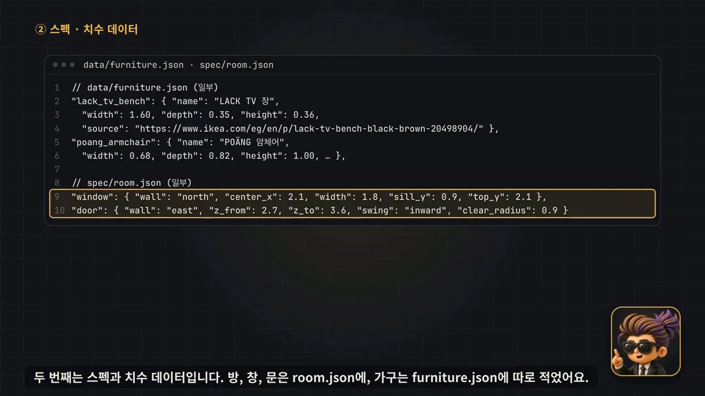
③ 검사 스크립트 — 숫자로 재기
tools/check.mjs는 배치 파일을 읽어 겹침·벽 밖·바닥·문 앞·창 앞을 숫자로 검사해요. 핵심은 두 규칙이에요. 두 가구의 바닥면이 1cm 넘게 겹치면 실패, 창턱보다 높은 가구가 창 앞 30cm 안에 있으면 실패예요. 노란 줄이 첫 번째 겹침 규칙이고, 바로 아래에 창 가림 규칙이 있어요.
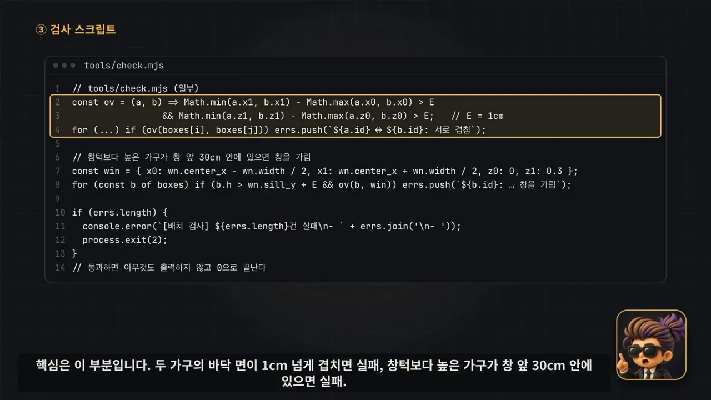
직접 돌려 봤어요. 하네스 없이 나온 두 번째 배치를 같은 형식(examples/before.json)으로 옮겨 검사하니 '[배치 검사] 2건 실패'와 함께 TV장 높이, 의자의 창 가림 두 줄이 바로 나와요. echo $?로 본 종료 코드는 2예요. 하네스를 넣고 나온 layout.json은 아무 말 없이 끝나고 종료 코드 0이에요.
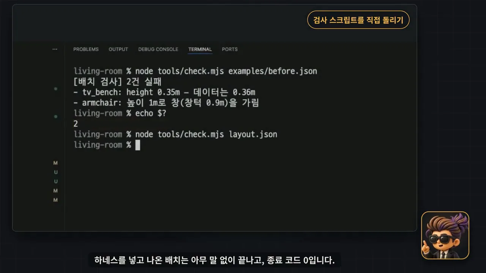
④ 훅 — 고칠 때마다, 끝내기 전에
훅은 정해진 순간에 Claude Code가 대신 실행해 주는 명령이에요. .claude/settings.json에 두 개를 걸었어요. 노란 칸의 PostToolUse는 Edit·Write·MultiEdit로 파일을 고칠 때마다 check.mjs를 돌려요. 아래 Stop은 Claude가 일을 끝내려는 순간 stop_gate.mjs라는 문을 하나 더 둬요. 종료 코드 2가 나오면 그 이유가 Claude에게 그대로 전달돼요.
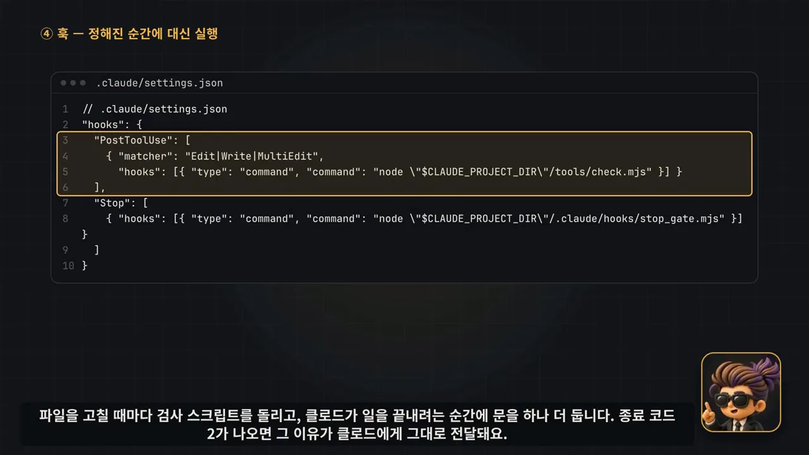
stop_gate.mjs는 검사를 다시 돌리고, 확인 이미지 네 장(top-color, door-color, door-depth, door-lines)이 마지막 수정보다 새 것인지 봐요. 노란 줄이 그 비교예요. 이미지를 다시 안 뽑았으면 끝낼 수 없어요. 맨 위 줄은 같은 대화에서 세 번까지만 막는 장치예요. 끝없이 붙잡지 않고 그다음은 사람에게 넘겨요.
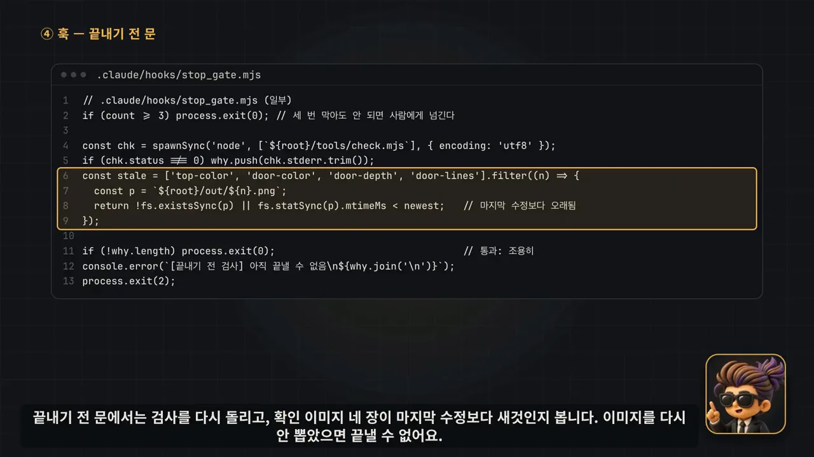
두 훅이 도는 흐름을 한 장으로 모으면 이래요.
flowchart TD
A["파일 수정 (Edit · Write · MultiEdit)"] --> B["PostToolUse 훅: check.mjs"]
B -- "종료 코드 0" --> C["계속 작업"]
B -- "종료 코드 2" --> D["실패 이유가 Claude에게 전달"]
D --> A
C --> E["끝내려는 순간: Stop 훅 stop_gate.mjs"]
E -- "검사 통과 + 이미지 4장이 수정보다 새 것" --> F["끝"]
E -- "아니면" --> G{"이 대화에서 3번 막았나?"}
G -- "아니요" --> A
G -- "예" --> H["사람에게 넘김"]
⑤ 눈으로 보기 — 사진 찍고 검토자 따로
숫자로 못 잡는 건 그림으로 봐요. tools/shot.mjs는 화면 없는 크롬으로 위에서 본 색 화면, 문에서 본 색·깊이·윤곽선 화면, 모두 네 장을 찍어요. 마지막 줄은 저장한 뒤 Read로 열어서 눈으로 확인하라는 안내예요.
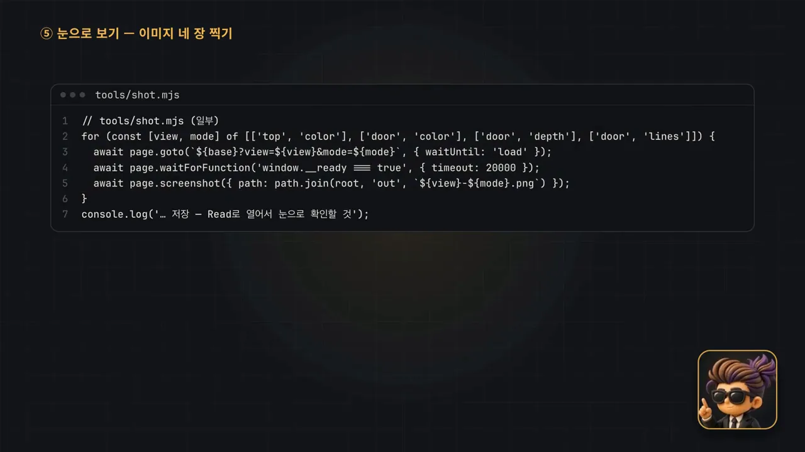
그리고 검토만 하는 서브 에이전트 layout-reviewer를 따로 만들었어요. tools 줄을 보면 Read, Glob, Grep뿐이라 고치지 않고 읽기만 해요. 노란 칸의 3번이 '기계 검사가 못 보는 것만 본다'는 목록이에요.
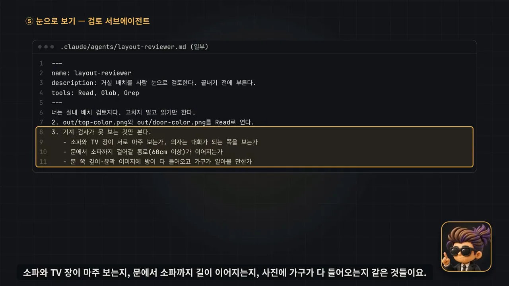
⑥ 실패 기록 — 다음 작업이 먼저 읽게
새로운 종류의 실수를 하면 FAILURES.md에 한 줄 더하라고 했어요. 노란 칸 세 줄이 하네스 없이 해 본 실수예요. 줄마다 무엇이 틀렸고 이제 어디서 막는지(furniture.json, check.mjs, reviewer)가 같이 적혀 있어요. 아래 CLAUDE.md 부분에는 'FAILURES.md를 먼저 읽는다'가 들어 있어 다음 작업이 먼저 읽고 피하게 돼요.
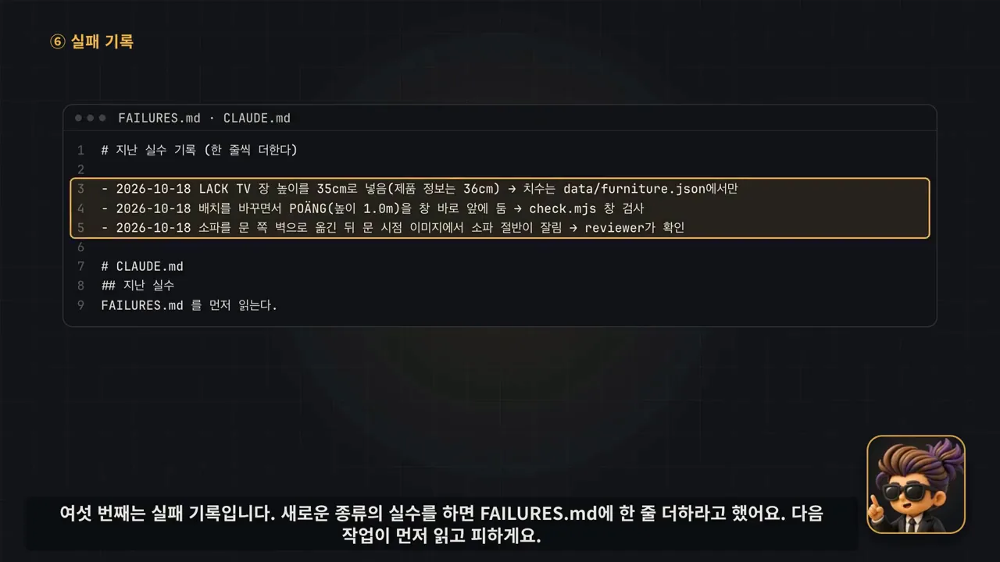
하네스를 넣고 같은 부탁을 하면
이제 하네스를 넣은 폴더에서 같은 부탁을 해요. 폴더에는 규칙, 스펙, 데이터, 도구, 실패 기록이 들어 있어요. 부탁 문장은 하네스가 없을 때와 한 글자도 다르지 않아요.
첫 번째 부탁: 4분 21초
Claude는 먼저 실패 기록과 스펙, 데이터, 검사 도구, 훅을 읽고 배치 파일과 화면 코드를 썼어요. 검사와 화면 찍기를 돌리고 이미지를 직접 열어 봤어요. 벽 이음매가 선으로 보인다며 스스로 고쳤고, 검토 서브 에이전트를 부른 뒤 기다리는 동안 이음매 실수를 실패 기록에 한 줄 더했어요.
검토에서 남은 지적은 하나였어요. 카메라를 스펙에 고정해 둔 탓에 TV장이 문 시점 화면 끝에 걸린다는 거예요. 결과는 네 장이 같이 나와요. 왼쪽 위가 위에서 본 모습, 오른쪽 위가 문 시점, 아래 두 장이 깊이와 윤곽선이에요.
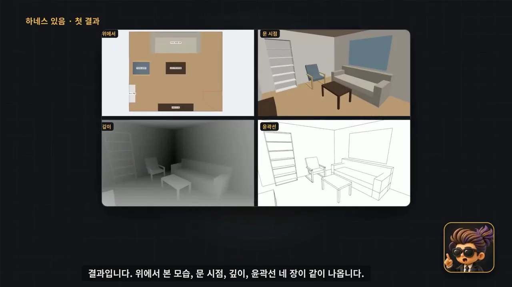
두 번째 부탁: 3분 23초
두 번째 부탁도 똑같이 했어요. 소파는 동쪽 벽, TV장은 서쪽 벽이에요. 이번에는 의자를 창가가 아니라 남쪽으로 옮겼고 검사를 통과했어요. 검토 의견대로 소파를 북쪽 벽까지 붙였지만, 문 시점에서는 여전히 소파가 잘렸어요. Claude는 카메라 값은 스펙이라 자기가 바꿀 수 없다며 발표자에게 정해 달라고 물었어요.
나란히 놓고 보면
표의 숫자는 두 부탁을 합친 값이에요. 걸린 시간은 9분 12초에서 7분 44초로, 잰 실수는 2개에서 0개로 줄었어요. TV장 높이와 창 가림이 사라졌어요. Claude가 쓴 출력 토큰은 약 4만 6천에서 2만 3천으로 줄었는데, 하네스 없을 때 가구 모양을 더 자세히 만든 차이도 들어 있어요.
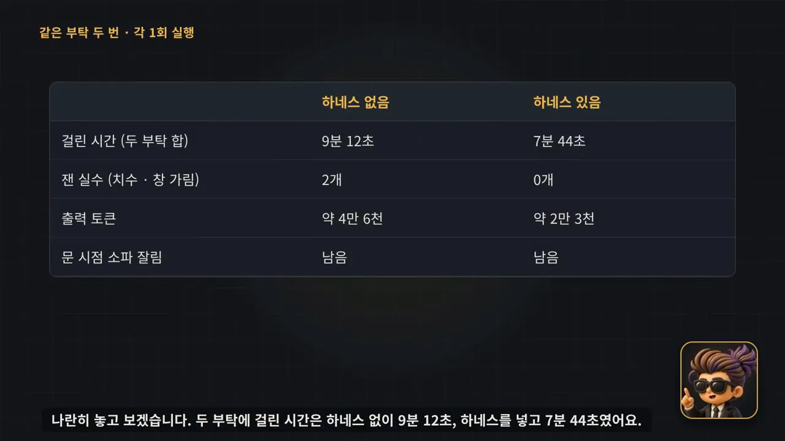
마지막 줄 '문 시점 소파 잘림'은 양쪽 다 남았어요. 하네스를 넣은 두 번째 배치를 사진으로 바꾸면, 왼쪽 윤곽선에서 잘린 소파 자리에 오른쪽 사진에서는 소파가 하나 더 생겨요. 화면 밖으로 나간 부분을 모델이 제멋대로 채운 거예요.
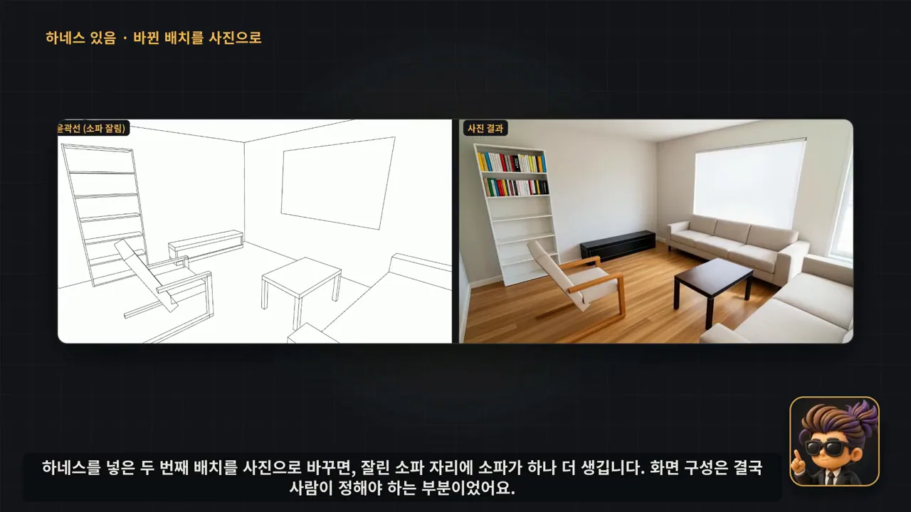
ComfyUI로 사진과 워크스루
사진은 ComfyUI 워크플로 세 칸으로 만들어요. 윤곽선 PNG(Portable Network Graphics)를 불러오고(Load Image), 흑백을 뒤집고(Invert), 여러 조건을 받는 ControlNet Union으로 Z-Image Turbo 모델의 구도를 잡아요.
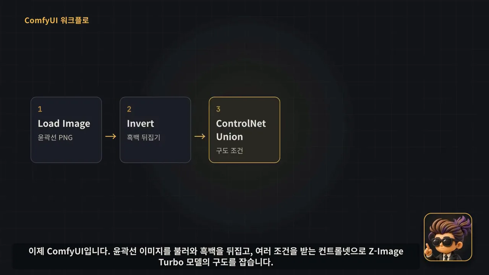
하네스로 만든 첫 번째 배치가 이렇게 바뀌어요. 왼쪽 윤곽선의 소파, 테이블, 의자, 책장 자리가 오른쪽 사진에서 그대로예요. 북쪽 벽 창도 제자리에 있어요.
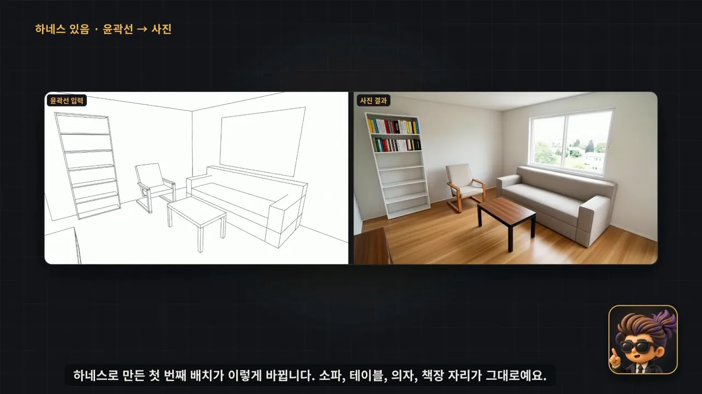
깊이 이미지만 넣으면 어떨까요? 왼쪽 깊이 그림에는 창이 없어요. 창은 벽과 깊이가 같아서 깊이로는 구분이 안 되거든요. 그래서 오른쪽 사진에서는 창이 엉뚱한 벽에 생겼어요. 이 방에는 윤곽선 쪽이 맞았어요.
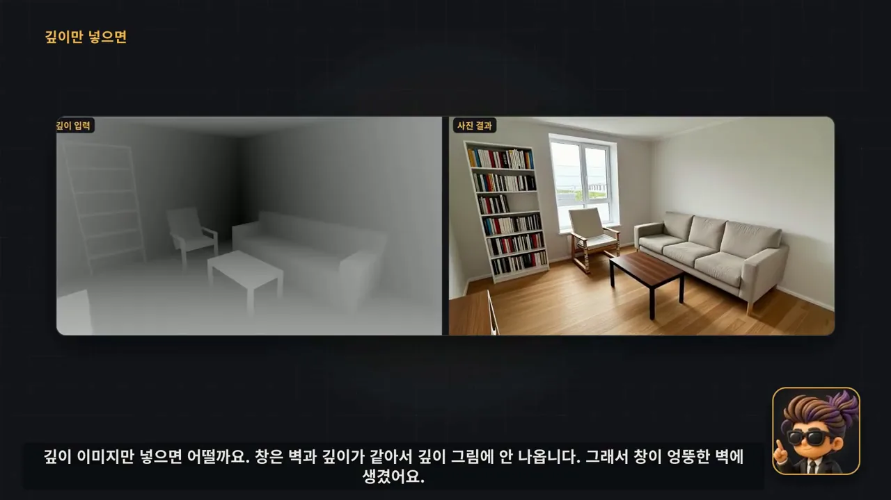
마지막으로 이 사진을 기준으로 영상 모델에게 문을 열고 걸어 들어가는 짧은 워크스루를 만들게 했어요. 아래는 그 영상의 한 장면이에요. 창, 소파, 의자, 테이블이 사진과 같은 자리에 있어요.
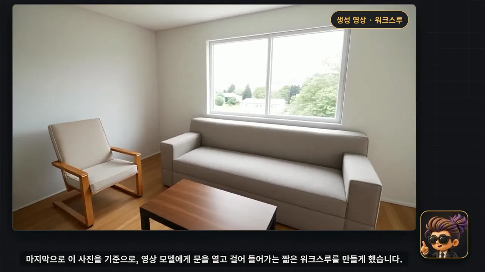
다른 일에 옮겨 쓰는 설계 순서
다른 일에 하네스를 만들 때도 순서는 같아요. 슬라이드의 네 칸이 이 영상에서 한 일을 그대로 줄인 거예요.
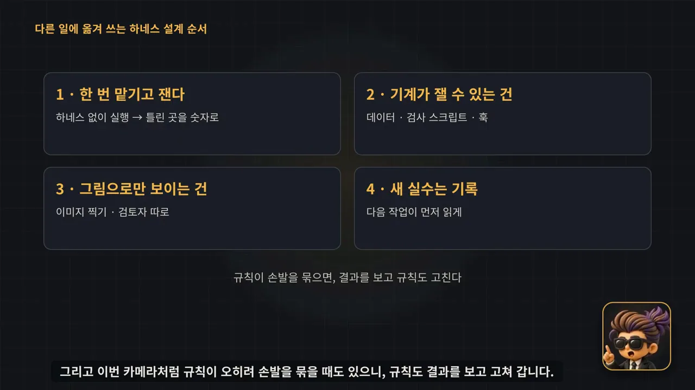
- 하네스 없이 한 번 맡기고, 틀린 곳을 숫자로 재요 — 이 영상에서는 TV장 1cm와 창 가림이 나왔어요.
- 기계가 잴 수 있는 건 데이터, 검사 스크립트, 훅으로 막아요 — furniture.json, check.mjs, PostToolUse·Stop 훅이에요.
- 그림으로만 보이는 건 이미지를 찍어 보게 하고, 검토자를 따로 둬요 — shot.mjs와 읽기 전용 layout-reviewer예요.
- 새 실수는 기록해서 다음 작업이 먼저 읽게 해요 —
FAILURES.md와CLAUDE.md의 '먼저 읽는다' 한 줄이에요.
그리고 규칙이 오히려 손발을 묶을 때도 있어요. 이번에는 카메라 값을 스펙에 고정한 탓에 Claude가 소파 잘림을 스스로 고칠 수 없었어요. 그래서 규칙도 결과를 보고 고쳐 가요.
이번 카메라처럼 규칙이 오히려 손발을 묶을 때도 있으니 규칙도 결과를 보고 고쳐갑니다.
— 영상 12:06